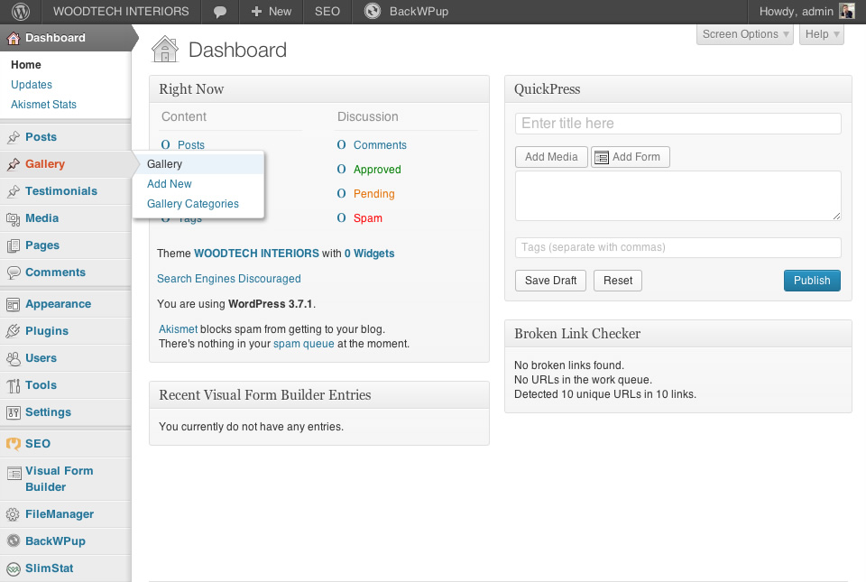
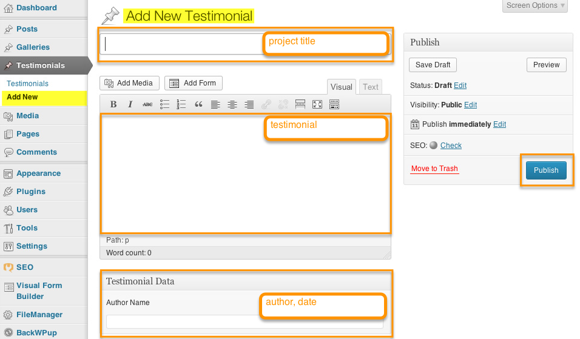

Alex,
here is the manual for your website - some notes on editing, updating and adding new content. These instructions are custom to your setup, the design of the WoodtechInteriors site.
Please bear in mind that if you searched for tutorials on using WordPress, not all aspects will apply to your setup. Please feel free to get in touch if you get stuck with anything - happy to help :)
admin
logging in/out
As your website runs on WordPress as CMS it has 2 views, one public view which is what your site visitors will see—and the admin view which you can access via a login only. To edit the site's content for updates, edits or changes - you can use the admin functions.
I'd recommend to work in different browser tabs as you edit your site, or 2 different windows if you prefer. You work in the admin window for the edits, save your edits and then go to the public site to refresh the page and see your changes immediately. This will allow you to check whether your edits are working as planned.
If you need to un-do a change - you will be able to go back via the revisions panel in your post's editor.
To log in to work on the website - go to http://woodtechinteriors.co.uk/wp-admin and type in your username and password. You can log out via your profile link in the top right corner in the admin section.
dashboard
Once logged in - you will see the dashboard which gives a quick overview of the site’s content. All admin options are displayed within the left side panel, organised by content type and admin options. The right panel gives you a quick overview of the site and published content. Bear in mind that both your gallery and your testimonial section are custom made for you and will not appear here.
As you can see - your site's content primarily uses pages.
dashboard menu options

The main menu options and their usage are:
Dashboard
your site's overview, the first screen once you log in
Posts
your site does not include any posts, typically used for news sections or blogs
Gallery
for "our work" section
Testimonials
for "what our clients say" section
Media
lists all uploaded media files, such as photos
Pages
this is where you update all your pages
Comments
your site does not include any comments which would usually be used for posts, typically used for news sections or blogs
Appearance
shows theme options. For your site, there are no widgets in place so any changes will not yield results as this is not implemented.
Plugins
your Akismet settings: Akismet is a powerful spam filter for WordPress and needs a key to be activated.
Users
shows all the existing users of your site. You can setup new users, if Simon ever wants to post to the site - you could set him up as user, for example.
Settings
this is where your site is configured.
content types
Before you can start editing the existing content or add a new piece - a quick word on the different content types used for the website. All are editable and are made to fit your purpose..
Your WordPress setup works with 3 different types of content:
Pages
Your website's section and additional content are all presented as pages. Some split into sections, but all editable as individual pages. Additional content such as the request form and cookie policy are also pages, linked where relevant.
Pages form the menu and footer links.
Galleries
The "our work" section shows a page showing your listed galleries, each editable individually + function to add new galleries. This section contains your requested headings as categories, and one gallery for each.
Testimonials
The testimonial for the "what our clients say" section - editor for message and author. You can edit the existing content and add new testimonials as you receive them.
updating existing content
Regular updates and content edits will be keep your site fresh and add incentive for site visitors to return. It will also benefit SEO to keep content updated.
editing pages
To edit the content of any of the pages - click on Pages which will drop down 2 options.
All Pages
will show all existing pages, ordered by date
Add New
will allow for adding a new page
When hovering over a page’s panel within the listing - you will see the edit options appear underneath the page title.
Edit
click to access the text editor with all options
Quick Edit
click to edit details only, such as publish date, author or page status
Trash
click to move page into the trash (will not be permanently deleted with this, merely moved and kept in the Trash)
View
click to view the page as seen by site visitors
Once you click 'Edit' - you will be taken to the page’s editor. Here, you will be able to change the content, add new text or images to the existing content, and update the current page.
Some page user shortcode snippets to structure the content, allowing for better presentation within the webpage. It is important that you keep these intact as they carry the design.
The screenshot below shows the 3 shortcodes used for the "what we do" page. Content it placed between the tags:
[intro]
opening tag = term inside square brackets (first shortcode for intro paragraph)
…content…
all content added after the opening tag (including all text, images etc…)
[/intro]
closing tag = term, preceded by a forward slash, inside square brackets (first shortcode for intro paragraph)
For existing content, please check carefully for the shortcode tags before editing.
Should you make a mistake - you will be able to go back to a previous version of the post via the Revisions panel, shown below the editor.
editing client testimonials
The customer testimonial editor is the same as for the page - but contains one extra panel which allows you to add the author name and date in addition to the text.
Testimonials
will show all existing testimonials, ordered by date
Add New
will allow for adding a new testimonial
editing existing galleries
To edit an existing gallery - click on Gallery, which will drop down 3 options:
All Galleries
will show all galleries, ordered by date
Add New
will allow for adding a new gallery
Categories
gallery categories
edit gallery
For a specific gallery edit, view 'All Galleries' and hover over the pane with the required gallery's title and click 'edit'.
The window shows the usual editor with the gallery icon, a project description as well as the Gallery categories and the featured image. All need to be edited for a full gallery display.
Once the gallery editor is open, you can edit the image's title, add new images, or reshuffle the order of appearance. Clicking on an image will bring up its details, ideally you will use the alt text and caption only.
Don't forget to save your changes within the gallery post after your edits!
edit category description / image
To change description or feature image of any given category, select "Gallery Categories", hover over the category to be edited and click 'edit'. In the editor, proceed to make your changes and click 'update' when finished.
Any changes made to the main category will be applied immediately and you can view the updates on the page.
publishing new content
The current structure of the site can of course be expanded. However, at this point, your content presentation works best in the 6 main sections. This structure is clear and focused and the amount of menu links is easy to recognise and use, additional sections should be carefully considered and planned.
In addition, the design adapts to smaller screens and currently relies on an even number of menu links in order to reflow well when viewed on smaller screens.
When updating the main pages (home/what we do/who we are) - you can simply add new content to the existing pages, to expand upon the text or add new updates. Fresh content would be great to add to the testimonials in 'what our clients say' and 'our work' galleries. New content will appear automatically on the site after updated.
adding new testimonial
Any new testimonial needs to include a title (naming the project worked on), the testimonial itself and the author's name, followed by date. Once complete - click 'publish'. The new testimonial will be shown as first item on the page.

adding new content to the gallery
The 'our work' section currently consists of the 4 categories you outlined. Each has its own feature image and description and is shown on the 'our work' page as overview, each leading to its own gallery page of projects.
You can expand on the currently shown pieces by adding a new gallery, or by adding more photos into the existing galleries (as outlined above).
adding a new project/gallery
To add a new gallery, edit the highlighted panels to complete the setup and click 'publish' when complete.
adding a new gallery category
To add a new gallery category, edit the highlighted panels to complete the setup and click 'publish' when complete.
custom settings
visual-form-builder.png
Menu
!! caution !!
Be careful when editing the menu. The current setup should not need to be changed - other than a reshuffling of the order of links, or the link text itself. Removing links can make linked sections inaccessible.
Visual Form Builder
The forms on the site, for 'contact us' and the 'request quote' are using a plugin, called the Visual Form Builder. You can edit the existing forms via an easy to use interface, allowing you to customise where messages are sent, and what questions to ask. The settings are clear and likely to be self-explanatory. Please do get in touch if you need help :)
happy editing
Alex, good luck ;)
I hope this manual is useful and sufficient. Please do feel free to get in touch if you get stuck or have any further questions - always happy to help :)